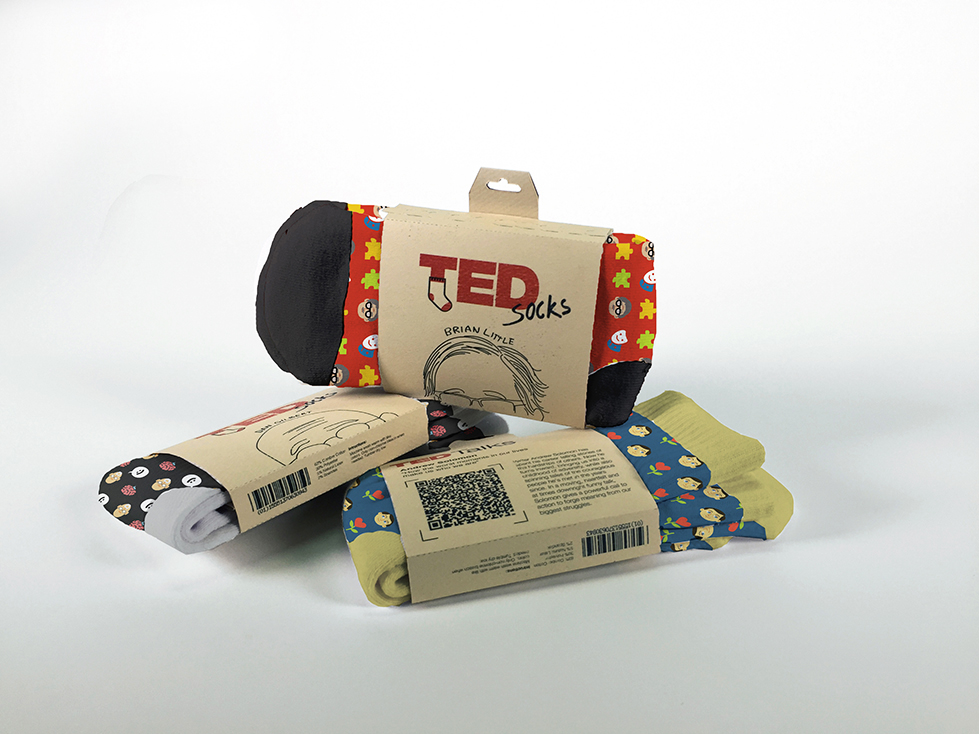
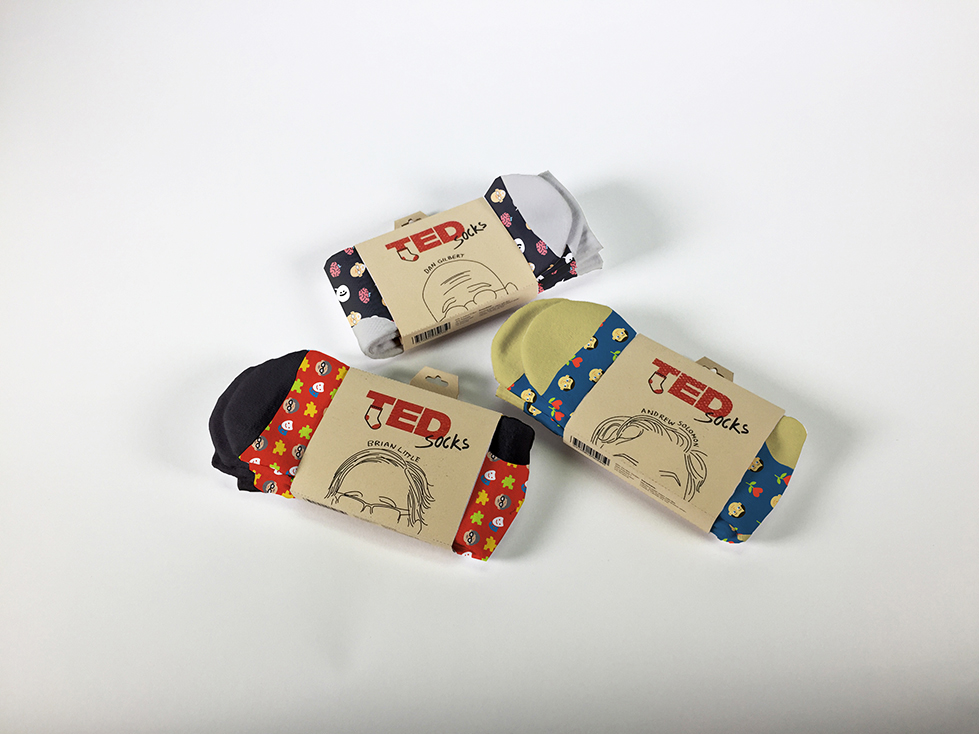
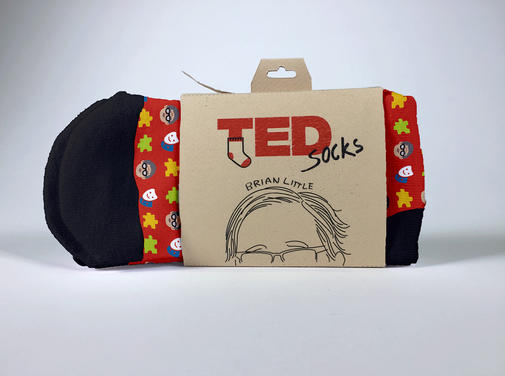
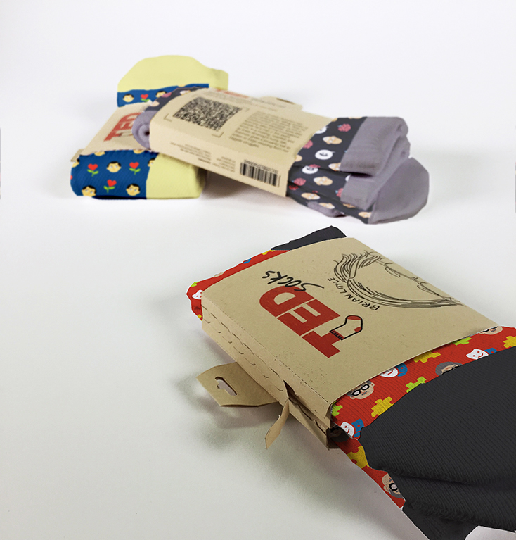

One time when I was having a pretty rough time and feeling unmotivated, a friend of mine made a pep talk TED Talk playlist for me. Watching those videos warmed my heart. Just like a pair of socks on cold days. Inspired by my friend's sweet gesture, I made a product concept that could encourage people to do similar kinds of gestures. It would also add more thought to a rather cliché gift option, socks, wouldn't it?
On the back side of the packaging are the summary and QR code link to the TEDtalk.
The design of the socks corresponds to speaker and the topic of the TEDtalk itself.
The packaging opening sequence:
The folded paper inside prevents the pair of socks from sliding off the packaging and allows people to open the packaging without ripping the printed information on the paper.
